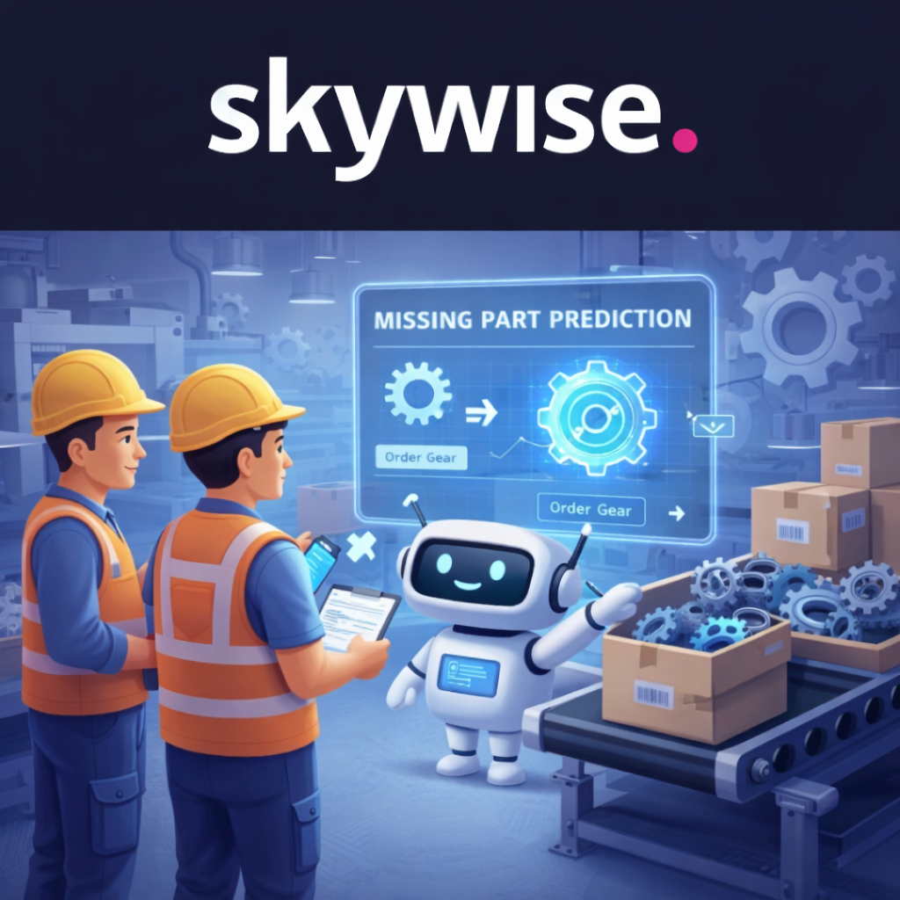
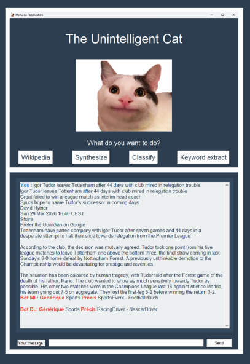

Projets de Machine learning
Modèle de pièce manquante
Dans la production aérospatiale à cadence élevée, les « Pièces Manquantes » (MSP) sont l'un des principaux facteurs de perturbation de la chaîne d'assemblage. Pour y remédier à l'usine de Saint-Eloi, j'ai développé un modèle de machine learning conçu pour prédire la génération de pièces manquantes.
Après un Proof of Concept (POC) réussi atteignant un Recall moyen de 80% sur la classe minoritaire, le projet est entré dans sa phase suivante :
· Les départements Logistique et Approvisionnement collaborent avec moi pour utiliser les fonctionnalités d'explicabilité du modèle afin de comprendre les facteurs sous-jacents de la formation de pièces manquantes.
· Je collabore avec les entités centrales d'Airbus pour harmoniser cet outil avec les modèles et initiatives en centrale de « Pièce manquante ».
· Faire évoluer le modèle (obtenir un MVP) pour un déploiement sur la plateforme Skywise.

The Untenlligent Cat
Dans le cadre d'un projet académique, j'ai conçu et développé un modèle NLP personnalisé capable d'analyser un texte pour en extraire le thème principal, générer des résumés, identifier les mots-clés et retrouver les pages Wikipédia pertinentes. Le projet comprenait également la création d'une interface graphique interactive (style chatbot) pour une utilisation intuitive.
Tous les modèles ont été développés de zéro, sans appels à des LLMs pré-entraînés, garantissant une compréhension approfondie des fondamentaux du NLP et de leur implémentation.

Modèle de conduite autonome
Dans le cadre d’un projet académique, j’ai conçu et mis en œuvre un agent autonome utilisant l’apprentissage par renforcement (RL). L’objectif était de développer un modèle capable de naviguer de manière autonome dans l’environnement de simulation CARLA tout en respectant les principales contraintes de conduite : maintien de la voie, évitement des collisions et gestion dynamique de la vitesse.
L'entraînement du modèle a été réalisé uniquement sur du matériel personnel (sans accès à une infrastructure dédiée), ce qui a limité le nombre d'épisodes d'entraînement.
Pour surmonter ce défi, j'ai :
· Optimisé l'architecture du modèle (PPO) pour maximiser l'efficacité malgré les contraintes matérielles.
· Affiné la stratégie de la fonction de récompense pour accélérer la convergence malgré un nombre réduit d'itérations.
Cette expérience a renforcé ma capacité à fournir des solutions performantes dans des environnements à ressources limitées, tout en maintenant une rigueur technique.